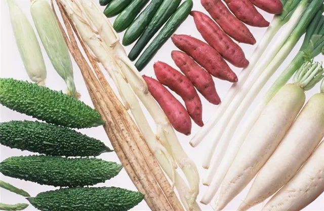
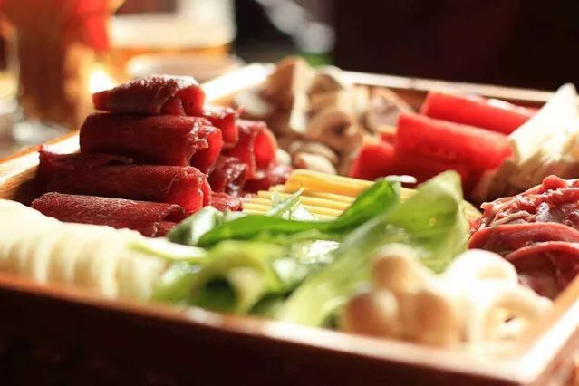

火锅攻略
记得《摆渡人》里有一句台词是酱紫的“能够一起吃火锅的人, 都是同一个世界的人。”冷冷的冬日里在家窝着， 和家人围坐在一起吃火锅，感觉特别温暖和满足， 心和胃都被填满、被温暖、被滋养着。 Momscook火锅攻略大全热辣辣出炉， 这也许不是史上NO.1强大的，但一定是你用得着的攻略， 吃货们快接好啦！
为了让大家吃得更健康，先科普一下下，一般人都不知道的火锅正确吃法： 先以青菜、豆腐、土豆等素菜打通肠胃，再循序渐进吃荤菜。 荤素的比例以1:2为佳。
食材篇
素菜：
秋冬季是吃白萝卜的最佳时期，配上山药、 莲藕等健胃益脾的食材，还可以加上菌类、 芋头、冬笋、菠菜、娃娃菜、茼蒿、大白菜等 时令蔬菜，品种丰富，养胃养生。
肉类：
羊肉、牛肉、鸭肉等温补食材最为适合， 祛寒又健康。但“三高”者应尽量选用鸡、 海鲜、鱼类等清淡食材，还有各种手工丸子、 午餐肉也是火锅的标配。
